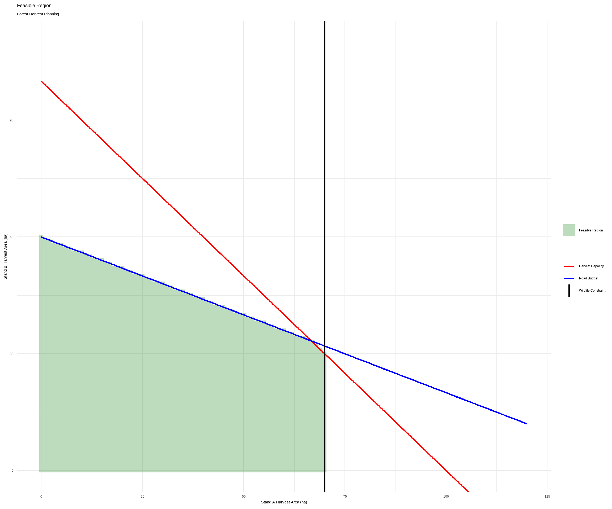
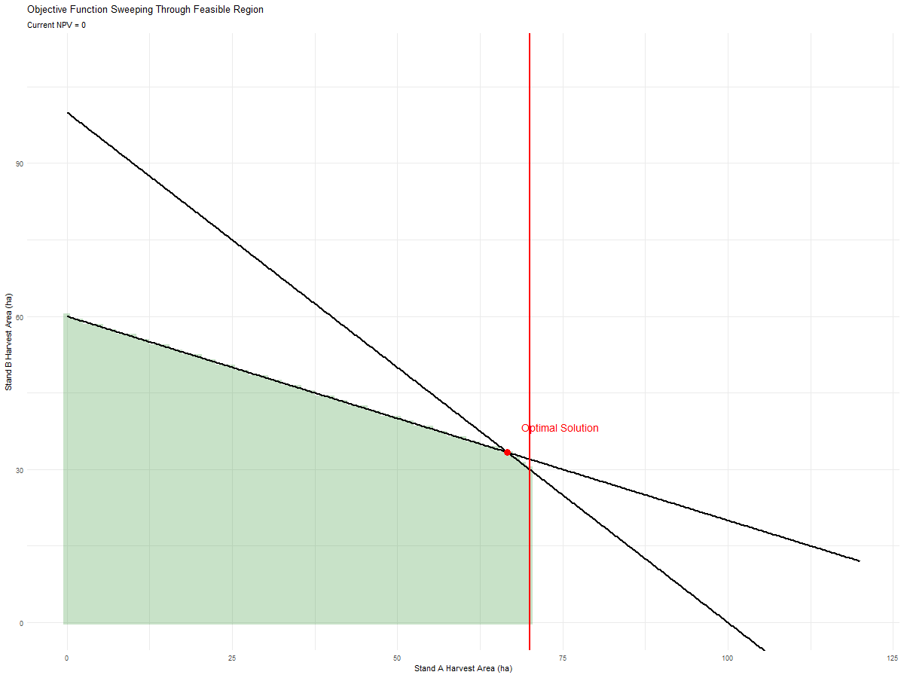

2 Simple Linear Programming
2.1 Introduction
Linear programming (LP) is a mathematical optimization technique used to identify the best possible solution to a problem when resources are limited and decisions are constrained. In its simplest form, linear programming seeks to maximize or minimize an objective function—such as profit, cost, timber volume, or net present value—while satisfying a set of linear constraints that represent real-world limitations. These constraints may include budgets, labour availability, harvest capacities, road construction limits, wildlife requirements, or other operational considerations. The term linear refers to the fact that both the objective function and the constraints are expressed as linear equations or inequalities.
Linear programming has been widely applied in fields such as transportation, manufacturing, agriculture, finance, and natural resource management. In forestry, linear programming can be used to determine harvest schedules, allocate silviculture investments, design road networks, or balance timber production with environmental objectives. Although modern forest planning problems often involve thousands of decision variables and complex non-linear relationships, linear programming provides an important foundation for understanding optimization. The concepts of decision variables, objective functions, constraints, feasible solutions, and optimal solutions form the basis of many more advanced approaches, including simulated annealing, goal programming, and other heuristic optimization techniques used in contemporary forest estate planning.
A good explainer is found here
2.2 The Simplex Method
The Simplex Method is one of the most widely used algorithms for solving linear programming problems. Developed by George Dantzig in 1947, the method provides a systematic procedure for finding the optimal solution to an optimization problem involving a linear objective function and a set of linear constraints. Rather than evaluating every possible solution, which would be impractical for most problems, the Simplex Method efficiently moves through a sequence of candidate solutions until it identifies the best feasible solution. Because of its speed and reliability, it became one of the foundational algorithms in operations research, economics, engineering, transportation planning, and natural resource management.
Before understanding how the Simplex Method works, it is important to define several key terms. The objective function is the equation that measures the quantity to be maximized or minimized, such as profit, timber volume, net present value, or cost. For example, a forest manager might wish to maximize:
NPV=500x+800y
where x and y represent harvest areas in two forest stands. The objective function provides a numerical score for every possible solution and defines what the optimization process is trying to achieve. In a maximization problem, larger objective function values represent better solutions, while in a minimization problem, smaller values are preferred.
A constraint is a mathematical restriction that limits the allowable values of the decision variables. Constraints represent real-world limitations such as budgets, harvesting capacities, road construction costs, labour availability, or wildlife habitat requirements. Together, all constraints define the set of solutions that are acceptable. The collection of points that satisfy every constraint simultaneously is known as the feasible region. In a two-variable problem, the feasible region can often be visualized as a polygon on a graph. Every point inside this region represents a valid solution, while points outside violate one or more constraints and are therefore infeasible.
The Simplex Method exploits an important property of linear programming: if an optimal solution exists, it must occur at one of the corner points, or vertices, of the feasible region. Rather than searching the entire region, the algorithm begins at one feasible vertex and systematically moves to adjacent vertices that improve the objective function value. Each move is guaranteed to maintain feasibility while providing an equal or better solution. The process continues until no neighboring vertex offers further improvement, at which point the current vertex is the optimal solution. In essence, the Simplex Method finds the best solution by “walking” along the edges of the feasible region from one corner to another, efficiently locating the point that maximizes or minimizes the objective function.
2.2.0.1 A Simple Problem
This simplified forest harvest planning problem demonstrates how linear programming can be used to allocate limited resources in order to maximize economic return. The model contains two decision variables: xx, representing the number of hectares harvested in Stand A, and yy, representing the number of hectares harvested in Stand B. The objective is to maximize the forest estate’s net present value (NPV), expressed as:
NPV=500x+800y
This objective function indicates that each hectare harvested in Stand A contributes $500 of value, while each hectare harvested in Stand B contributes $800. Because Stand B generates a greater return per hectare, the optimization process will generally prefer harvesting Stand B whenever the available resources and management constraints allow it.
The harvest plan must also satisfy several constraints that reflect operational and environmental limitations. The harvest capacity constraint (x+y ≤ 100) limits total harvesting to 100 hectares, representing available harvesting equipment, labour, or processing capacity. The road budget constraint (2x+5y ≤ 300) limits the amount of road construction or maintenance funding available, with Stand B requiring more road resources per hectare than Stand A. Finally, the wildlife constraint (x ≤ 70x) restricts harvesting in Stand A to ensure sufficient habitat retention. Together with the non-negativity constraints (x ≥ 0x, y ≥ 0y), these conditions define a set of feasible harvest plans. The purpose of the linear programming model is to identify the combination of harvest areas in Stands A and B that satisfies all constraints while producing the highest possible net present value.
The lpSolve package is an R package that provides tools for solving linear programming, integer programming, and mixed-integer programming problems. It serves as an interface to the efficient lp_solve optimization library, allowing users to define an objective function, specify constraints, and automatically identify the optimal solution that maximizes or minimizes the objective while satisfying all constraints. In a typical workflow, the user supplies the coefficients of the objective function, a matrix of constraint coefficients, the direction of each constraint (e.g., ≤, =, ≥), and the corresponding right-hand-side values. The package then applies optimization algorithms, such as the Simplex Method, to determine the optimal values of the decision variables and the resulting objective function value. Because of its simplicity and ease of use, lpSolve is widely used for teaching linear programming concepts and solving practical optimization problems in fields such as forestry, transportation, manufacturing, finance, and resource management.
library(tidyverse)
library(lpSolve)
library(gganimate)
library(plotly)
objective <- c(500,800)
#The constraints matrix stores the coefficients of the linear constraints used in
#the optimization model. Each row represents a separate constraint, while the
#two columns correspond to the decision variables x(hectares harvested in Stand
#A) and y (hectares harvested in Stand B).
#The first row, (1, 1), defines the harvest-capacity constraint x+y≤100, which
#limits the total harvested area. The second row, (2, 5), defines the road-budget
#constraint 2x+5y≤300, indicating that harvesting a hectare in Stand B requires
#more road resources than harvesting a hectare in Stand A. The third row, (1, 0),
#defines the wildlife constraint x≤70 restricting the amount of harvesting
#allowed in Stand A. Together with the constraint directions (<=) and right-hand-side
#limits (100, 300, and 70), this matrix forms the system of inequalities
#that defines the feasible region of the linear programming problem.
constraints <- matrix(
c(
1,1,
2,5,
1,0
),
nrow=3,
byrow=TRUE
)
rhs <- c(
100,
300,
70
)
direction <- c(
"<=",
"<=",
"<="
)
solution <- lp(
direction = "max",
objective.in = objective,
const.mat = constraints,
const.dir = direction,
const.rhs = rhs
)2.2.1 Results
| Linear Programming Solution | |
| Optimal Forest Harvest Plan | |
| Variable | Value |
|---|---|
| Stand A Harvest (ha) | 66.67 |
| Stand B Harvest (ha) | 33.33 |
| Maximum NPV | 60,000.00 |
The linear programming model determined that the optimal harvest plan is to harvest approximately 66.67 hectares from Stand A and 33.33 hectares from Stand B, resulting in a maximum Net Present Value (NPV) of $60,000. These values represent the combination of harvest areas that produces the highest economic return while satisfying all of the management constraints imposed on the problem. Although Stand B generates more value per hectare ($800/ha) than Stand A ($500/ha), it also consumes more road-budget resources. The optimal solution therefore balances the higher profitability of Stand B against the greater road costs associated with harvesting it.
An important observation is that the optimal solution occurs where the harvest-capacity constraint and the road-budget constraint intersect. At the optimum, both constraints are fully utilized:
66.67+33.33 = 100
and
2(66.67)+5(33.33)≈300
Because these constraints are binding, they are the primary factors limiting further increases in NPV. In contrast, the wildlife constraint is not binding, since the solution harvests only 66.67 hectares from Stand A, which is below the maximum allowable limit of 70 hectares. The results therefore indicate that available harvesting capacity and road budget are the critical resources determining the optimal harvest plan. Any increase in either of these resources would likely allow a higher NPV to be achieved, whereas relaxing the wildlife constraint alone would have no effect on the current optimal solution.
2.2.2 The Feasible Solution Space

The figure illustrates the feasible solution space for the forest harvest planning problem. The horizontal axis represents the number of hectares harvested in Stand A, while the vertical axis represents the number of hectares harvested in Stand B. The red diagonal line corresponds to the harvest-capacity constraint (x+y≤100), the blue diagonal line represents the road-budget constraint (2x+5y≤300), and the vertical red line represents the wildlife constraint (x≤70). Each constraint divides the graph into a valid region and an invalid region. For a solution to be feasible, it must satisfy all constraints simultaneously, meaning it must lie below both diagonal lines and to the left of the vertical wildlife constraint.
The shaded green region is the feasible region, which contains every harvest plan that satisfies all management requirements. Any point inside this area represents a valid combination of harvest areas for Stands A and B. For example, harvesting 30 hectares from Stand A and 20 hectares from Stand B would be feasible because it respects the harvest-capacity limit, remains within the road budget, and does not exceed the wildlife restriction. In contrast, points located outside the green region violate at least one constraint. A point above the harvest-capacity line exceeds the total allowable harvest area, a point above the road-budget line exceeds available road funding, and a point to the right of the wildlife line harvests too much of Stand A.
The feasible region provides a visual representation of all possible solutions available to the forest manager. The objective of the linear programming model is not simply to find a feasible solution, but rather to find the best feasible solution according to the objective function. As the objective function is maximized, the search moves through the feasible region toward higher-profit combinations of harvest areas. Because the objective function and constraints are linear, the optimal solution occurs at one of the boundary vertices of the feasible region. In this example, the optimal harvest plan lies at the intersection of the harvest-capacity and road-budget constraints, where both resources are fully utilized and the maximum net present value is achieved.

This figure illustrates the relationship between the objective function and the feasible region in a linear programming problem. The shaded green area represents the feasible solution space, containing all combinations of harvest areas in Stands A and B that satisfy the harvest-capacity, road-budget, and wildlife constraints. The two black diagonal lines are the harvest-capacity and road-budget constraints, while the vertical red line represents the wildlife constraint limiting harvest in Stand A. The red point marks the optimal solution identified by the linear programming model, located at approximately x=66.7 hectares and y=33.3 hectares. The blue line represents an objective-function contour, corresponding to a particular profit (NPV) level. In the animation, this blue line moves progressively upward and to the right, representing increasing profit values. As the objective-function contour advances, it eventually reaches the highest possible position while still touching the feasible region, at the red optimal point. Any further movement would place the contour entirely outside the feasible region and therefore violate one or more constraints. The animation therefore provides a visual demonstration of how linear programming identifies the optimal solution by maximizing the objective function within the set of feasible alternatives.
2.3 Summary
This chapter introduced the fundamental concepts of linear programming (LP) through a simple forest harvest planning problem. Linear programming is a mathematical optimization technique used to identify the best possible solution from a set of feasible alternatives while satisfying a series of constraints. Using decision variables representing harvest areas in two forest stands, an objective function representing net present value (NPV), and operational constraints representing harvest capacity, road budget, and wildlife requirements, the chapter demonstrated how optimization problems can be formulated mathematically and solved using the lpSolve package in R. Key concepts such as decision variables, objective functions, constraints, feasible regions, and optimal solutions were introduced and visualized to provide an intuitive understanding of how linear programming works.